Todavía no sabemos si las mascarillas funcionan
Como poner en cuestión las mascarillas es pecado mortal voy a explicar primero cómo he llegado hasta aquí y a qué me refiero.Como médico, me había parecido obvio y de perogrullo que las mascarillas deberían funcionar.Si las infecciones respiratorias se transmiten por gotitas, pues poner una barrera delante de la boca y de la nariz es evidente que tiene que funcionar.Sé que hubo debate en Twitter durante la primera ola con este tema, que si el CDC y la OMS decían que no había pruebas de que funcionara, otros que sí, ya digo que me parecía de cajón que tenían que funcionar y no seguí el tema.Pero entonces llega la segunda ola y ahí mi seguridad se vino abajo.Durante la primera ola no usábamos mascarillas pero ahora las usamos en todos los sitios y resulta que hemos llegado a una situación bastante similar a la de los meses de marzo y abril.Ahí es cuando empecé a pensar que algo no encajaba… Si estás utilizando unas medidas supuestamente eficaces no esperas que ocurra algo muy similar la segunda vez.Así que actualmente soy muy escéptico en cuanto a que las mascarillas sirvan para disminuir la transmisión comunitaria de la infección por Covid (no cuestiono su eficacia en otro tipo de actos médicos o contextos) y voy a exponer las razones por las que pienso esto:
1- Experiencia personal y el problema del mal uso
Mi experiencia personal es que en los sitios cerrados por los que me muevo (el metro, supermercados, centros comerciales, incluso la calle) la inmensa mayoría de la gente usa la mascarilla y la usa bien.Creo que podría citar un par de ocasiones en las que alguien en una tienda o en algún otro sitio cerrado se bajó la mascarilla por debajo de la nariz o de la barbilla.Igual mi experiencia no es representativa, no lo sé.Donde sí observo que la mascarilla no se utiliza según se recomienda es en las terrazas.No es lo habitual que la mayoría de la gente (hay muchos que hacen pero no son mayoría) use la mascarilla y se la retire sólo cuando va a beber; en mi experiencia, la gente está la mayor parte del tiempo sin la mascarilla mientras consume.Esto es cierto pero sabemos que en lugares abiertos el riesgo de contagio es muy bajo y tampoco creo que hay datos claros de que las terrazas sean la causa principal de los contagios.Aquí tenéis lo que ha pasado en Cataluña donde se cerraron los bares y restaurantes el 16 de Octubre: el número de casos siguió subiendo; han tenido allí 4.000 y 5.000 casos al día y esas personas no se contagiaron en las terrazas porque los bares estaban cerrados.Alemania tiene bares y restaurantes cerrados desde hace casi un mes (cerró con 14.964 casos diarios) y ha tenido 21.965 en las últimas 24 horas.No parece que los bares y restaurantes sean precisamente el motor de la pandemia.
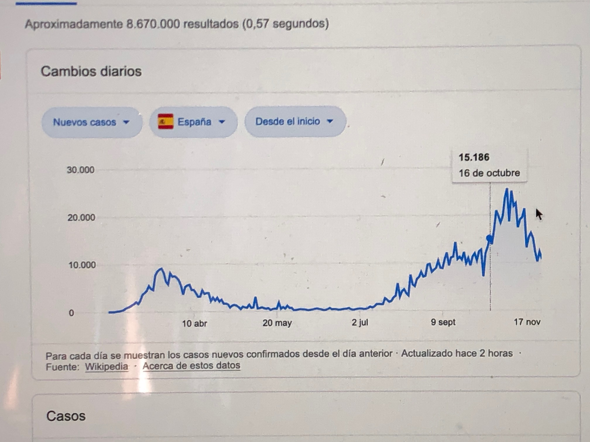
Continúo un poco con el tema de que los ciudadanos usamos mal las mascarillas.Vamos a hablar de Chequia.En abril se hizo viral este video sobre cómo habían parado los checos la pandemia, a diferencia de otros países.Entre las causas destacaban el uso de la mascarilla.La propia población fabricó mascarillas y no salía a la calle sin ellas.Eran el modelo a seguir, pero llega la segunda ola y Chequia pasa a ser epicentro de la pandemia.La población checa es la misma, un pueblo no se convierte en irresponsable y psicópata de la noche a la mañana.Y lo mismo ha pasado en muchos otros lugares y naciones.Sitios que se libraron en la primera ola han sido atacados en la segunda.La explicación no puede ser la conducta de la población.¿Cuál es la explicación?
Creo que no sabemos casi nada de este virus y que debajo de muchas de las atribuciones que hacemos está en la mayoría de los casos el azar o la evolución espontánea.Me parece que estamos cayendo continuamente en la falacia
'cum hoc ergo propter hoc' : como un suceso ocurre después de que hacemos algo, pensamos que se debe a eso que hicimos antes…Dicho de otra manera, se trataría de un ejemplo de ese refrán que dice que para el que sólo tiene un martillo todos los problemas son clavos.Como sólo tenemos las medidas no farmacológicas para explicar las cosas, intentamos explicar todo con ello: ¿que un país va peor?es que no usan las medidas…¿Que un país iba bien y ahora va mal, pues es que se han relajado, o han hecho mal el desconfinamiento…Deberíamos tal vez ser humildes y aceptar la incertidumbre, que hay muchas cosa que no sabemos todavía de este virus, y la posibilidad de que, sencillamente, igual hay poca o ninguna relación entre mucho de lo que nosotros hacemos y lo que hace este maldito bicho.
Una última cosa sobre este tema de usar mal las mascarillas y culpabilizar a la población del que hablaba en la entrada anterior.Se está imponiendo la idea de Jose Luis Jiménez y otros autores (ver este video suyo) de que la principal vía de contagio del Covid (y de otras infecciones respiratorias) son los aerosoles y parece que las mascarillas quirúrgicas y de tela no serían eficaces para impedir el contagio por aerosoles (las N95 o FFP2 serían tal vez más eficaces pero ver más abajo).Imaginemos que esto se confirma.¿Qué cara se nos iba a quedar a todos después de haber culpabilizado a los ciudadanos por algo de lo que no tenían el control?Les habríamos culpabilizado de usar mal unas mascarillas que en realidad no funcionan… Si vas a culpabilizar a alguien de algo, lo mínimo que se puede pedir es estar seguro de que esa culpa existe.Considero que en el caso del COVID no tenemos esa seguridad.
2- Estudios y revisiones.
No voy a entrar en profundidad en este tema.Recomiendo esta web para el que quiera revisar estudios sobre la eficacia de mascarillas, pero voy a mencionar algunos estudios que creo que son suficientes para ilustrar el tema.
Esta es una Revisión Cochrane de este mes sobre Intervenciones físicas para interrumpir o reducir la propagación de los virus respiratorios.Revisa mascarillas quirúrgicas, N95 e higiene de manos en gripe, no en la COVID.El mensaje principal es el siguiente:
'No existe seguridad acerca de si el uso de mascarillas médicas o quirúrgicas o mascarillas respiratorias N95/P2 ayuda a frenar la propagación de los virus respiratorios.Los programas de lavado de manos podrían ayudar a frenar la propagación de los virus respiratorios.'
Esta es una revisión de Julio de este año publicada en el Canadian Family Physician.En la Discusión leemos:
'En general, encontramos pruebas limitadas sobre el efecto de las mascarillas en las infecciones respiratorias virales, tanto en la comunidad como en los centros de salud, y la mayoría de nuestros análisis no mostraron diferencias estadísticamente significativas.Particularmente en el entorno comunitario, queríamos ver si había alguna evidencia de beneficio del uso sistemático de mascarillas por el público en general fuera de la casa, pero no encontramos tal evidencia.'
Hay investigaciones que estudian las condiciones mecánicas de transmisión en el laboratorio.Por ejemplo, este estudio con maniquies simula tanto la transmisión por gotitas como por aerosoles (por supuesto, estos estudios tienen todas las limitaciones del mundo a la hora de extrapolarlos a la vida real).En los resultados podemos ver la botella media llena o medio vacía.La parte de la botella medio llena:
'Encontramos que las mascarillas de algodón, las mascarillas quirúrgicas y las mascarillas N95 tienen un efecto protector con respecto a la transmisión de las gotitas/aerosoles infecciosos del SARS-CoV-2 y que la eficacia protectora era mayor cuando las máscaras eran usadas por un propagador de virus.'
Pero ésta es la parte de la botella medio vacía:
'Es importante que las mascarillas médicas (mascarillas quirúrgicas e incluso las mascarillas N95) no fueron capaces de bloquear completamente la transmisión de gotas de virus/aerosoles incluso cuando estaban completamente selladas.'
Hay algún estudio que ha comparado lugares que usan mascarillas con lugares que no las usan.Por ejemplo, este estudio decía en Octubre que en 1.083 condados de USA que establecieron el mandato de usar mascarilla habían disminuido las hospitalizaciones.En Noviembre lo retiraron los propios autores porque los casos se habían disparado en esos mismos condados.
El CDC ha publicado en noviembre este estudio que no ha sido retirado pero que tiene el mismo problema que el anterior.Se compara la incidencia de COVID-19 en los 24 condados de Kansas que aplicaron el mandato del gobernador de usar mascarillas de 2 de Julio con 81 condados que no lo aplicaron.Estudian lo que ocurre hasta el 23 de Agosto.El estudio tiene sus pegas (absolutamente todos las tienen) porque más de la mitad de condados aplican otras medidas además de las mascarillas, por ejemplo, pero eso ahora no importa.Encuentran que la incidencia disminuye un 6% en los condados que usan mascarilla mientas que sigue aumentando en los otros.Es importante que los 24 condados que aplican la medida representan el 67,3% de la población de Kansas (1.960.703 personas).
Lo que no nos dice el CDC es lo que ocurre en los condados que usan mascarillas después del 23 de Agosto, pero podéis verlo abajo así como el timeline de la pandemia en toda Kansas.Si las mascarillas eran eficaces en julio y agosto, ¿por qué no lo son en septiembre y octubre?Parece que las mascarillas funcionan…hasta que dejan de funcionar:
Esta es la evolución general de los dos tipos de condados, los que tenían obligación de mascarilla y los que no
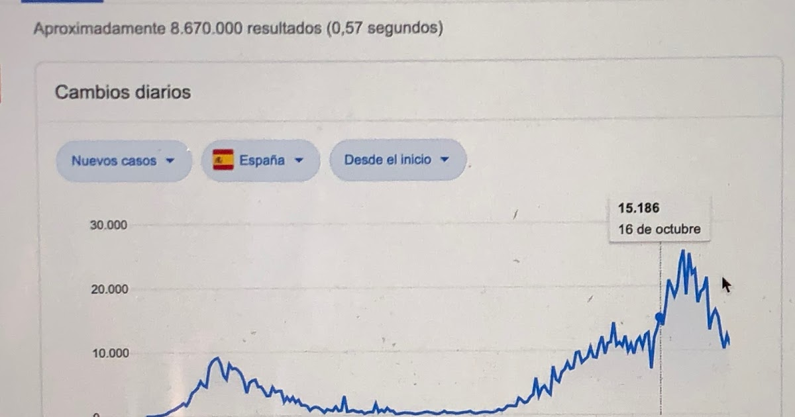
Esta ha sido la evolución posterior de los condados que usaban mascarilla
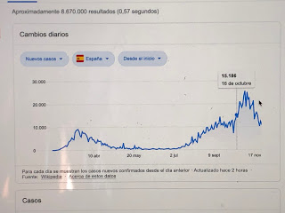
Y esta ha sido la evolución en toda Kansas:
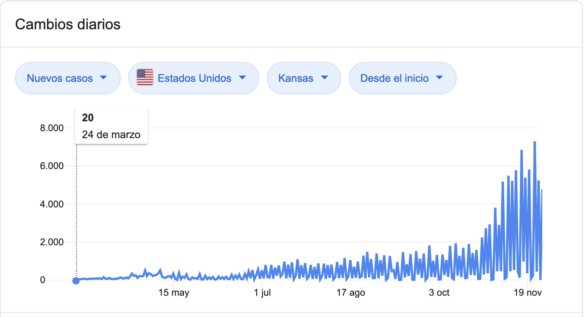
3-Relación (o ausencia de ella) entre obligación del uso de mascarilla e incidencia de COVID
Os pongo unas cuantas gráficas con observaciones ecológicas sobre lo que ha ocurrido con la incidencia de casos de COVID-19 después de establecer la obligatoriedad del uso de mascarillas
Momento de la obligación de uso de mascarillas en España y evolución de los contagios:
Francia
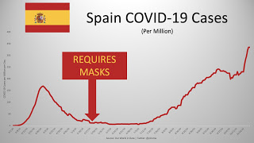
Italia
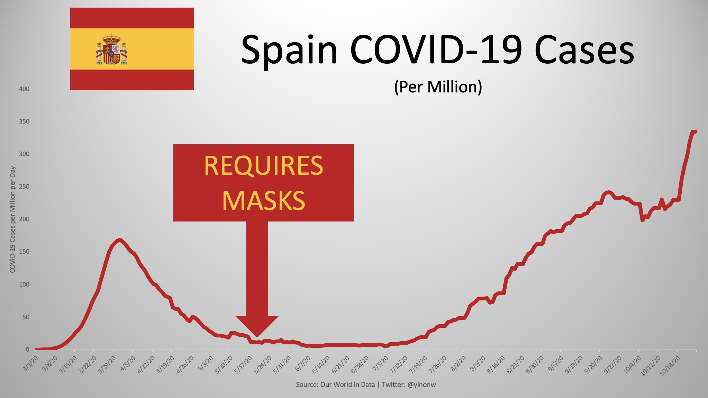
Alemania
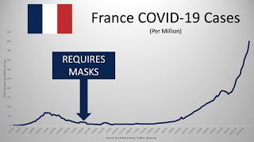
Bélgica
Irlanda
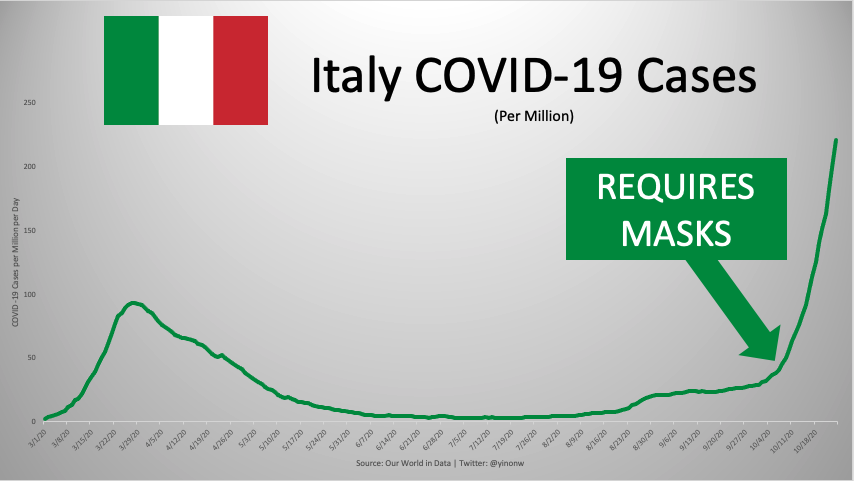
Hawai
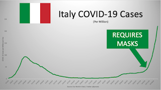
Tenéis más gráficas de este tipo en estos enlaces.Lo que observamos es que no se produce una reducción en la incidencia de casos tras la obligación.Al contrario, los casos acaban disparándose a pesar de estar en vigor la obligación de usar mascarilla.Si no existe ni siquiera correlación entre uso de mascarilla y disminución de casos es difícil plantear una causalidad.
Conclusiones
-¿Estoy diciendo que las mascarillas no funcionan para disminuir la transmisión comunitaria de la Covid-19?No, estoy diciendo que el tema está abierto, que el jurado sigue reunido, que los estudios son de muy baja calidad y se ve que hay poca o ninguna evidencia de que las mascarillas funcionen.Mejores estudios pueden establecer que sí funcionan.Ante la duda, creo que la relación coste/beneficio justifica pasarse en vez de quedarse corto, pero opino también que la seguridad con que se está asumiendo y afirmando que las mascarillas funcionan no está apoyada por los datos.
-¿Estoy diciendo que no hay que usar mascarillas?De ninguna manera.Soy absolutamente partidario de utilizar mascarillas en transportes públicos y lugares cerrados.Pero considero que la obligación de usar mascarillas en exteriores no se puede defender científicamente.La obligación de usar mascarilla cuando paseas solo y no interactúas con nadie creo que debería revisarse (y también debería realizarse una evaluación de todas las medidas que se han ido tomando).
En definitiva, opino que deberíamos aceptar la incertidumbre y abordar este debate con humildad, empatía y sentido común.Sería bueno dejar trabajar a los científicos con el convencimiento de que lo que más nos va a ayudar a todos es conocer la verdad.
@pitiklinov
Posted On: 2020-11-29T00:00:00
Posted By: Pitiklinov
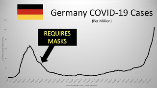
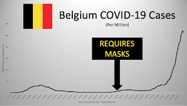
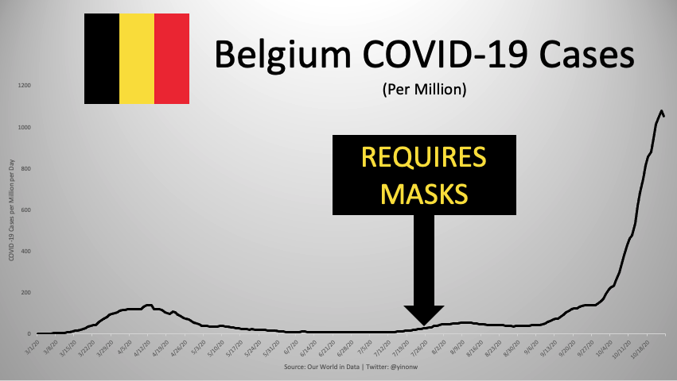
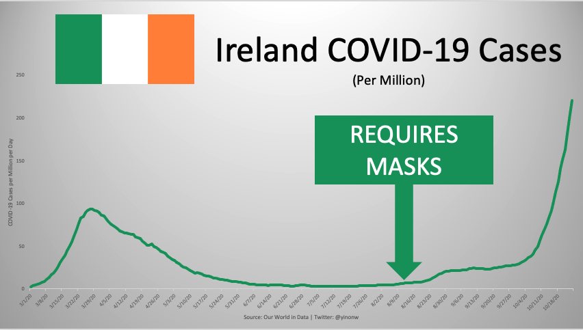
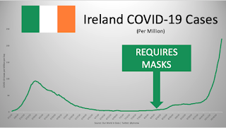
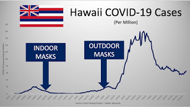
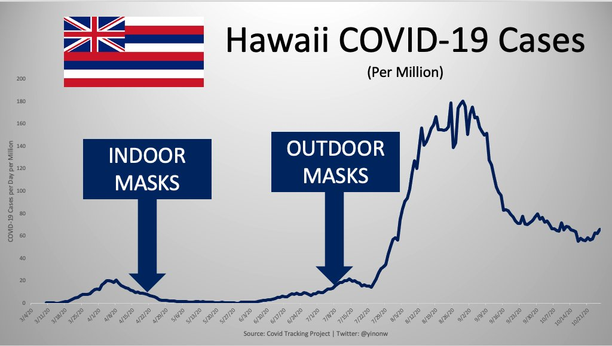
Content Date: 2020-11-29
Download Date: 2021-04-21
Document ID: L0C04AJDX